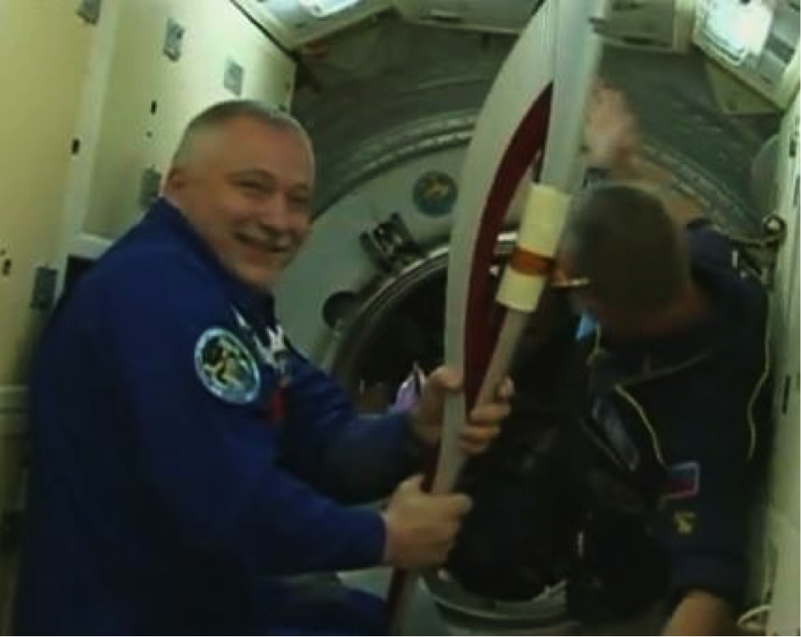

The Olympic torch at ISS
Sunday, 10 November 2013 20:15
Written by Mark Dahmke
The Olympic torch (and a crew of 3) made it to the space station this morning. The torch will take its first spacewalk in history this Saturday.
read moreYour Window on the Universe
Sunday, 10 November 2013 20:15
Written by Mark Dahmke
The Olympic torch (and a crew of 3) made it to the space station this morning. The torch will take its first spacewalk in history this Saturday.
read moreWednesday, 06 November 2013 14:06
Written by Mark Dahmke
A penumbral eclipse is more subtle, and more difficult to observe, than a total or partial eclipse. It happens when the moon moves through the outer part of Earth’s shadow.
read moreCheck out the Prarie Astronomy Club. The club meets at Hyde Observatory on the last Tuesday of every month at 7:30pm.
Describes the exotic science of quasars an super massive black holes. Running time: 20 minutes